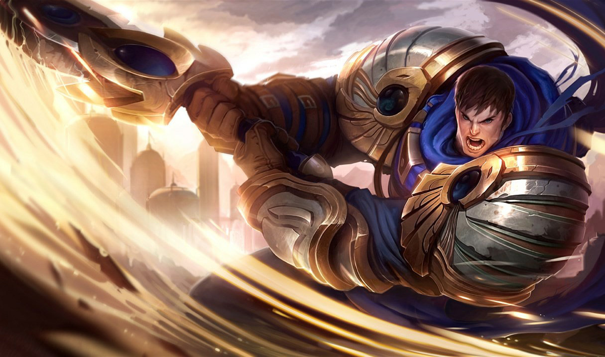

Builds de campeones
En esta sección encontrarás las mejores builds para tus campeones favoritos.
Campeón 1: Ahri
Rol: Mago/Asesino
Build recomendada:


*
- malignidad,Llamasombria,reloj de arena de Zhonya (objectos principales)
- Sombrero Mortal,Baston del vacio,Robaalmas de mejai (objectos Final)
- Runas: Electrocute, Taste of Blood, Eyeball Collection, Ultimate Hunter
- Hechizos de invocador: Flash, Ignite
Campeón 2: Garen
Rol: Luchador/Tanque
Build recomendada:


- Objetos: Black Cleaver, Sterak's Gage, Thornmail
- Runas: Conqueror, Triumph, Legend: Tenacity, Last Stand
- Hechizos de invocador: Flash, Teleport
Yone
Rol: Luchador/Asesino
Build recomendada:


- Objetos: Infinity Edge, Bloodthirster, Guardian Angel
- Runas: Conqueror, Triumph, Legend: Bloodline, Coup de Grace
- Hechizos de invocador: Flash, Ignite